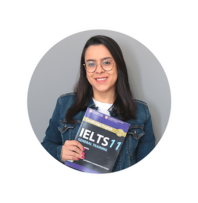

Sua preparação para o
IELTS começa aqui!
Baixe agora mesmo o meu ebook exclusivo
com mais de 100 páginas de informações essenciais,
dicas e estratégias para o IELTS.
Cadastre já seu email para receber o ebook

Hello!
Meu nome é Soraya Quirino e sou professora de inglês há 18 anos. Trabalho com preparação para IELTS desde 2010 e já ajudei milhares de alunos a conseguirem seus certificados de inglês para fins de imigração ou estudos no exterior.
Sou professora por formação, graduada em Letras e também possuo MBA em Inovação e Gestão em Educação a Distância na USP. Além disso, fiz o curso de formação para professores da Cambridge English chamado CELTA.
Muitos acham que é impossível conseguir uma boa nota no IELTS, mas isso não é verdade. Com planejamento e uma boa preparação, você consegue chegar lá.